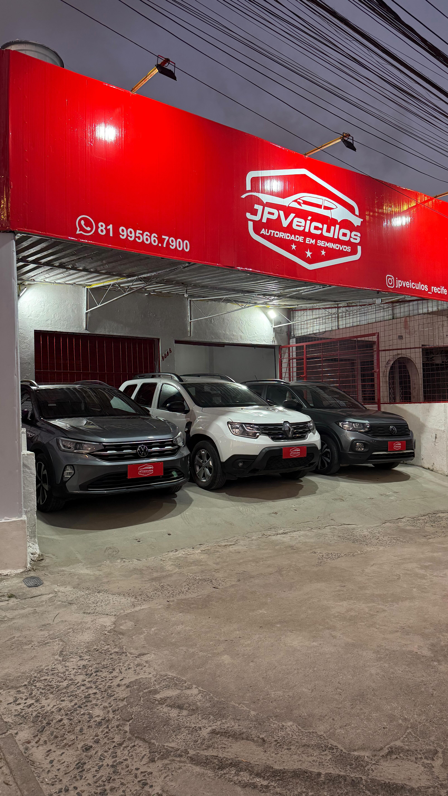

Sobre Nós
A JP Veículos é uma loja especializada em carros seminovos, prezando pela confiança e satisfação de seus clientes. Trabalhamos com os melhores modelos e preços justos, oferecendo transparência em todas as negociações.
Nossa missão é entregar veículos de qualidade com procedência garantida, sempre oferecendo o melhor atendimento e suporte para que você saia da nossa loja com o carro dos seus sonhos.
